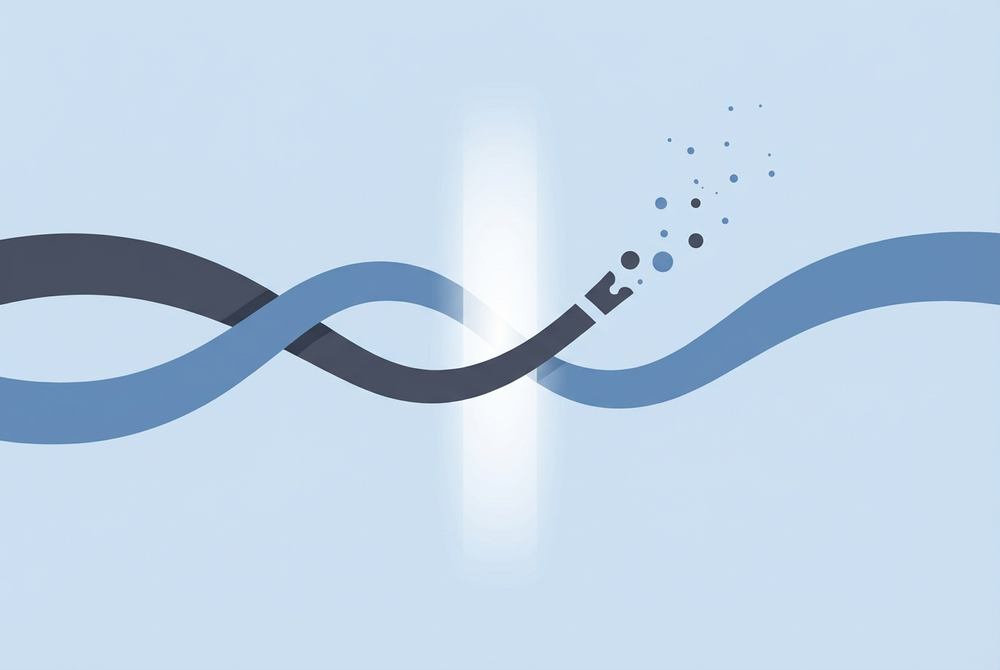
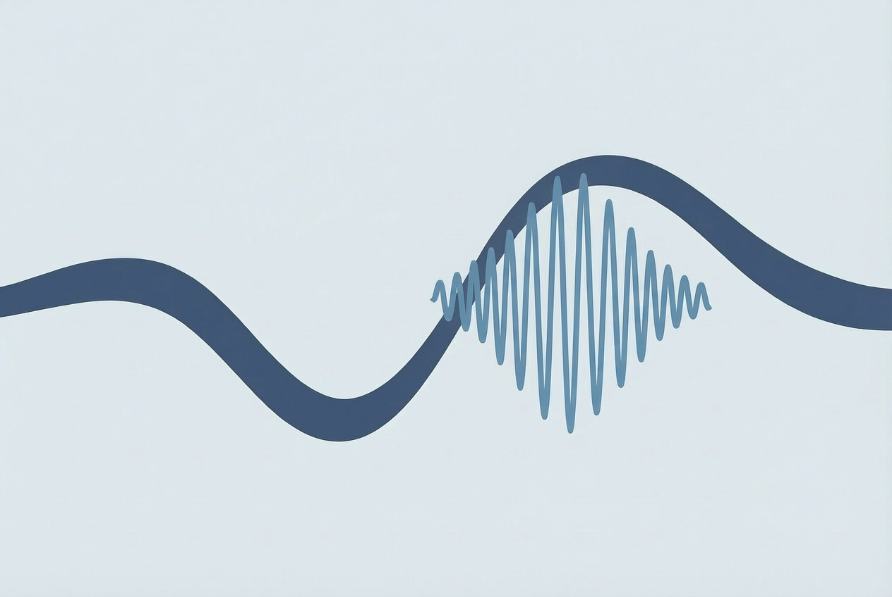
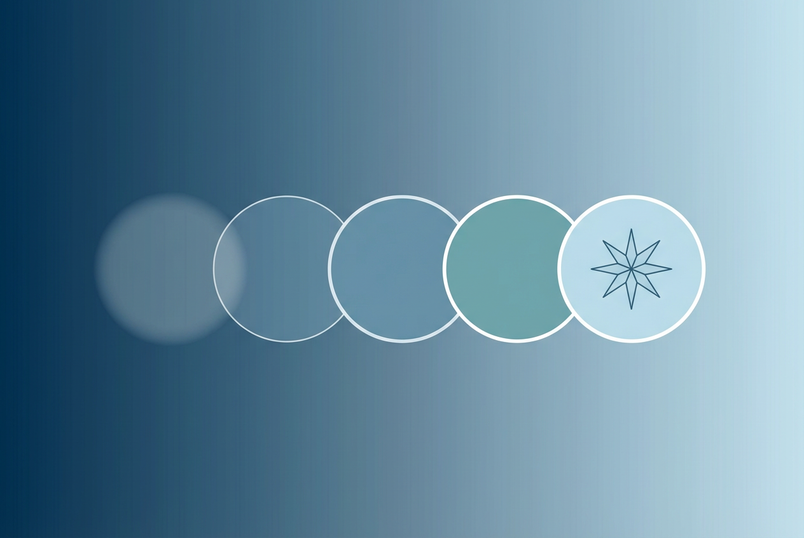

About the Lab
At the X-Sleep Lab (State Key Laboratory of Cognitive Science, Institute of Psychology, CAS), we view sleep not as a passive rest, but as a computationally rich state where memories are edited and consciousness is reconfigured. Instead of merely observing, we actively dialogue with the sleeping brain. By combining targeted memory reactivation (TMR) with custom closed-loop sleep BCIs, we track and interact with neural dynamics in real time. Through this, we are uncovering how the mind rewires itself during these hidden hours, translating nighttime discoveries into novel interventions for mental health.
Our Research →Lab at a Glance
Research Directions
Three interconnected frontiers at the boundary of sleep science and cognitive neuroscience.

Aversive memories are not read-only files permanently etched in the brain. Sleep provides the prime opportunity for the brain to update and rewire these experiences. Using targeted memory reactivation (TMR), we actively guide this nighttime editing process, selectively reshaping the emotional tone of specific memories while you sleep.
Learn more →
The sleeping brain is a highly interactive cognitive state. We build non-invasive, closed-loop sleep BCIs that move beyond passive recording to enable real-time intervention. By tracking signature rhythms like slow oscillations and spindles with millisecond precision, we deliver phase-locked cues that directly modulate the brain's offline processing, effectively engineering sleep.
Learn more →
Conscious awareness is not lost during sleep but exists on a spectrum that peaks with lucid dreaming. This paradoxical state occurs when metacognitive awareness coexists with sleep. We leverage this unique phenomenon as a rigorous experimental model to study consciousness itself, probing the exact neural mechanisms that allow self-awareness to emerge from the sleeping brain.
Learn more →Latest News